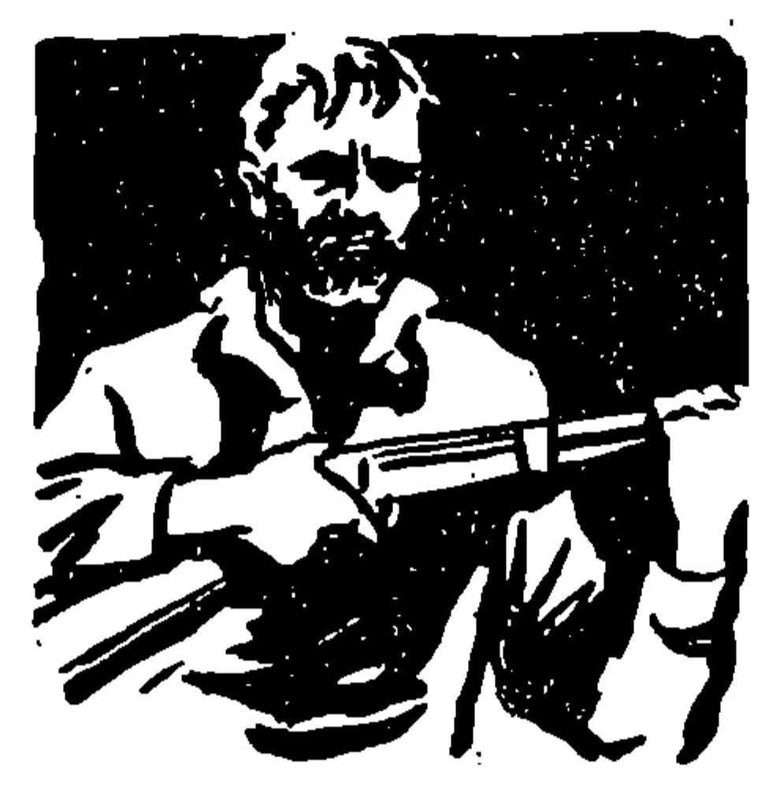
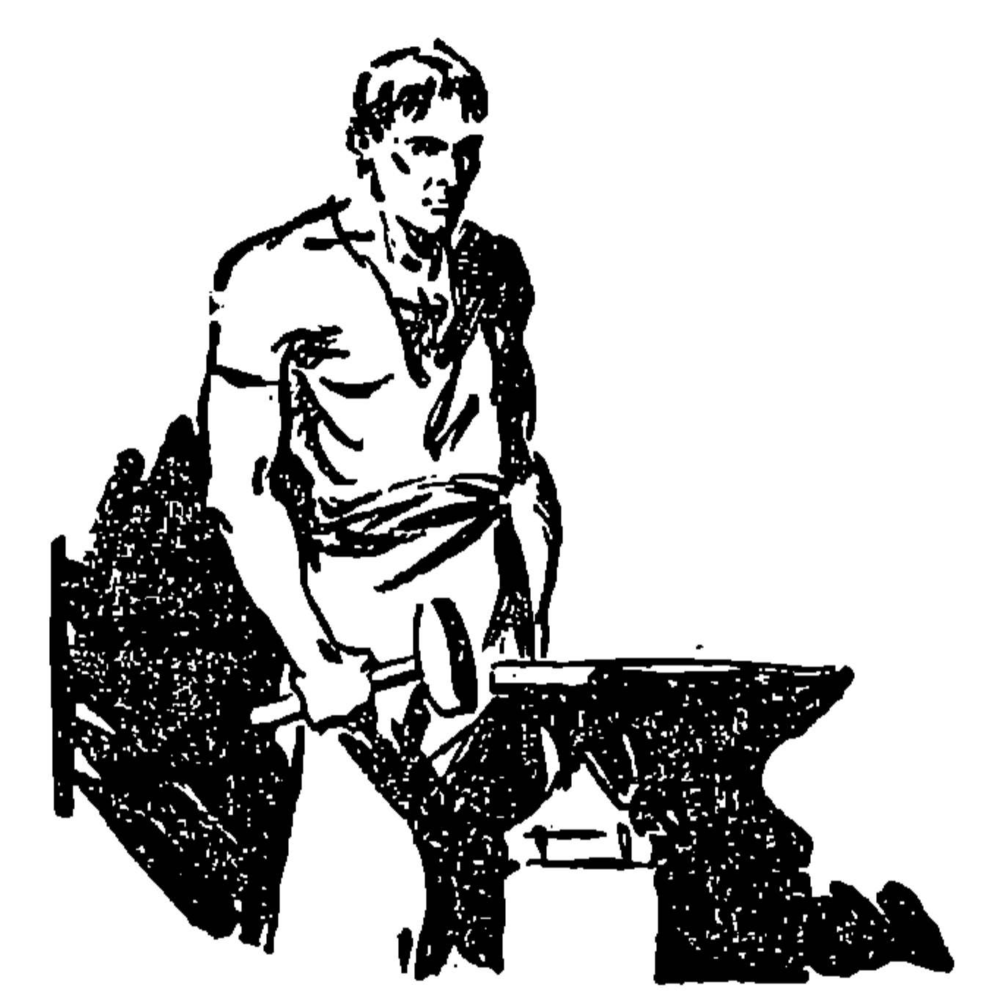
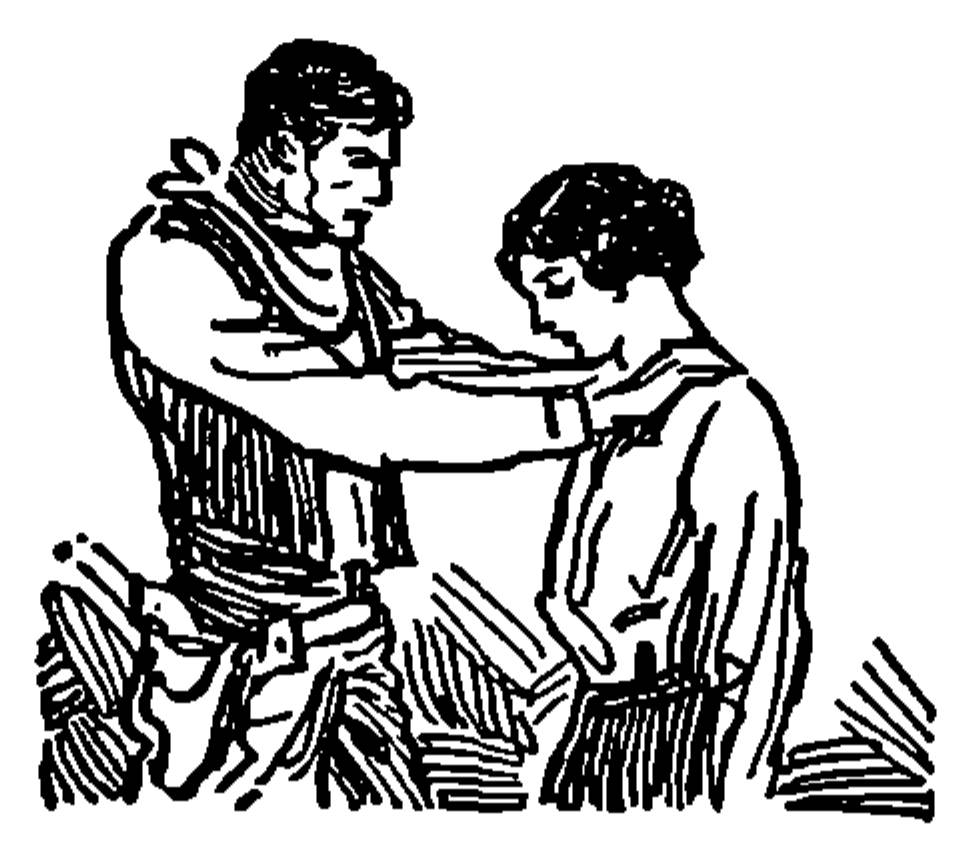

In Pistol Gap life was pitched to a key of suddenness and intensity. Men of this Western land worked with an energy that brought out the salt sweat; and their hours of play were equally violent. If they drank at all it was usually to excess and if they gambled they flung the whole of their labored wealth on the green table in prodigal abandon, never considering tomorrow. And in Pistol Gap death only infrequently visited a man in bed; one moment he was alive and in full stride; the next moment he was quite utterly dead. In such case the coroner’s jury had a uniform, unvarying verdict: “dead by an act of God.”
It was therefore natural that when Tud Drury rode into Pistol Gap leading a pack animal during the latter part of a sultry afternoon that Bully McGrane, marshal, should ease his massive bulk forward on a hotel porch chair and watch the newcomer’s successive movements with a sort of lowering, belligerent interest. Tud had made a trip down to procure supplies for himself and his three partners only two days previously. This trip augured something else; and the loaded burro also indicated something else. So Bully McGrane watched, removing his hat to scratch a cropped head badly scarred from his prize-ring days.
Drury went into the stable, remained a while and emerged with a canvas sack hanging heavily from one arm; Drury returned on the far side of the street, and entered ’Lisha Funston’s bank. Bully McGrane’s broad jaws tightened against his cigar and he tugged at the ends of his downsweeping mustache which gave him considerable physical resemblance to John L. Sullivan—with whom he once had sparred. A rumble came out of his chest; he laced his fingers across a vast paunch, at the same time keeping a direct glance on the bank door. Presently Drury came out empty-handed and started back. McGrane’s throaty challenge sounded forth with a bluntness that was at once uncivil and insolent. Drury paused in apparent unwillingness.
“Come ’ere, Drury. Want to see you.”
Drury approached, visibly irritated. He was a young man, dark featured, straight-spined. About him was the suggestion of a will yet to be curbed; and though he wore the rig of a miner—stained with shaft mud—he seemed to belong to another species of Westerner, he seemed still to carry the air of belonging to the saddle by trade. Coming to a stand in front of the marshal, he reached for his cigarettes and stared back at McGrane. If McGrane’s manner was one of overbearing authority, Drury’s was no less hostile.
“In early, ain’t you, Tud?”
Drury only shrugged his shoulders and poured tobacco into the creased wheat paper.
“You got grub for them bushjumpin’ pardners of yores just a while ago. What’s the play now?”
Drury’s white teeth flashed on the drawstring of the tobacco pouch; his eyes crossed the marshal’s face, mirroring irony.
“Looks to me,” went on McGrane, “as if that pack brute was carryin’ yore forty years’ gatherin’ out of the hills. Must’ve been a quarrel among thieves. You quittin’?”
Drury lit a match to his cigarette. “Maybe,” he observed, “I ought to get a permit from you to be alive, McGrane. You sure seem to expect it. My business is my business. I don’t owe you anything and I’m mindin’ my affairs strictly. As to what I’ve been doin’, or intend to do—you go straight to hell.” Turning definitely on his heels, he walked away, crossed the street again and entered the Freighter’s Rest.
McGrane, who was capable of springing out of his chair and crushing Drury with one lion-like sweep of his fist, relaxed, chuckling. It was not the mellow, humorous amusement of a man giving vent to inner kindliness. McGrane was too much of a cynical materialist to be kindly. Rather, his chuckle came of a malicious satisfaction in knowing Drury hated him with a full heart. McGrane took savage pleasure in making others hate him, in making others writhe under his hard dominance and at last desperately and futilely strike back. Pistol Gap was a tough town. Down this canyon-walled street came the turbulent characters of the hills—the miners, the punchers, the teamsters, the soldiers, the gamblers and gunmen and outcasts. Down this street walked the combings of the frontier, splitting the town wide open in their revelries and battles. There never had been a sheriff competent to go out and bring back a man; the other officials of Pistol Gap were but shadowy figures in the background. This was McGrane’s town. He ruled it with his gun and his fist; he ruled it because he understood the wholesome effect of fear. Bully McGrane had only one thread of philosophy in his bruiser’s head: might made right. And so while they cursed him, he sat back as some giant mastiff and jeered them with an arrogant, contemptuous indifference.
Meanwhile McGrane’s pale-blue eyes were fastened on the Freighter’s Rest, turning over in his mind the meaning of Tud Drury’s return. And he knew that if the man let any significant information drop along the street, willing ears would pick it up and bring it to him. The cigar in his mouth sent up intermittent rings of smoke; his two broken-knuckled fists lay idle on the chair arms. Pistol Gap was held in sultry silence, broken only by the ringing strokes of Billy Monteith’s blacksmith hammer.
However, Tud Drury was no hand to betray his private affairs. In the Freighter’s Rest he tarried only long enough to redeem certain pledged articles in the saloon safe. There was a poker game in progress and one of the players indicated an empty chair. But Drury shook his head, bought a cigar out of courtesy to the house, and left. Turning west, he walked the length of the street and swung into a kind of alley leading up a lesser canyon. Here was the seamy side of Pistol Gap; along a meandering creek fronted small cabins, farther up was Chinatown, and in the immediate foreground rested the three-story bulk of a building cut into the ravine wall. Across the peeling paint was a semicircular sign:
Drury walked through the main door and into an enormous rink that served as theater and dance hall. It was dark and stifling and permeated with the stale odors of tobacco smoke and spilled liquor. Along one side ran a bar; at the far end stood a stage; opposite the bar and enclosed by plush curtains were a series of private stalls. Here and there lounged a few heat-oppressed employees of the place. Drury looked around for a moment, went on down a side corridor and climbed two flights of stairs. At a door near the end of a long hall he knocked quietly; it opened and a tall girl with ash-gold hair and eyes so set in gravity as to seem never-smiling stood before him.
At sight of the man her face lightened and an inner worry seemed to dissolve. As for Tud Drury, he threw his cigar to the floor in sudden distaste; he spoke with a slow huskiness that was nothing like his clear and level challenge to Bully McGrane.
“Here I am, Anna.”
She motioned him inside the room—a bare, clean room with a single shaft of sunlight cutting across the curtained darkness. Against this light her tall body made a round and graceful pattern.
“I heard you were in town a few days ago, Tud,” said she, a drawling weariness in the words.
“I was,” said the man. “But I was busy and went right out. Well, it wasn’t that, either. But I was figuring out a proposition and I didn’t want to say anything to you about it until I could come and be sure of good news.”
“I thought,” murmured the girl, “you had changed your mind. Forgotten.”
Drury flung up his head. “Not in a thousand years! Anna, we’re through with all our troubles. I’ve swung my deal. I got out of that mine with money enough to see us clear of this crooked country and far enough away never to think of it again. I despise everything in it. It’s crucified you and branded me. But it won’t any more. We’re going—we’ve got a fresh deal ahead of us.”
“Tud—you made your money straight? Not like you once did, not by stealing?”
Drury straightened. His talk quickened and took on a ring of assurance and strength. “Since the night I saw you six months ago, Anna, I have never touched a drop of liquor, I have never ridden with the old gang, I have never roped another man’s cow. Every penny in my pocket came out of the earth. It’s mine—I worked for it. I’m not sayin’ I liked grubbin’ in the dirt. I don’t, for it’s not my game. But I did it—and the sooner we’re married and on our way the better. Down in the Thunder Cloud country there’s some Indian land open to homestead. There’s where we’ll go.”
She turned a little to better study his face. “Your partners—you’ve had trouble with them. I can see it, Tud.”
“They were crooked when they bought into my claim. They’re crooked now. I know what they figured. They aimed to work until we had a stake and then knock me in the head. There’s been no night in the last four months I’ve had both eyes shut. Never a time I didn’t keep my gun on me. They figured it was a sure deal. I knew they figured it that way. But I needed money to develop the claim and I took ’em in. They paid for their shares and they agreed to the split—five parts of all dust for me and one apiece for each of them. I reckon they had me counted as an easy mark until this mornin’. The mine’s peterin’ out and I couldn’t stand the strain any longer. So I forced the issue. Had to hold a rifle on ’em while we divided up. I didn’t take an ounce that wasn’t rightfully mine, but they wanted to kill me. They went into it with their eyes open and aiming to cut my throat—and I guess they’d have done it in another couple days. But I’m clear. We can start fresh—and we’ll forget Pistol Gap ever existed.”
“If you still want me,” whispered the girl.
“No matter how many times I change my mind,” said the man, “nothin’ could ever make it change about you.”
“Tud—if it is only pity that brings you back I won’t listen.”
“Here,” muttered Drury, “don’t say that. I won’t stand for it. What was I when I walked into this place six months ago and saw you singing on the stage? A no-good drifter. On the down-grade. Shiftless. Takin’ what didn’t belong to me. And that would have been my story until a bullet stopped me, if I hadn’t seen you. Do you reckon pity had anything to do with the change in me? You know better.”
“You could pick a better girl, Tud.”
He was silent for a time, but his dark eyes flamed with inner fire. “Not in a thousand years,” he went on. “When I consider the battle you had to eat and keep alive I want to go out and kill somebody. It’d broke any other girl in the land. It ain’t right you’ve got to sing and smile for the animals that come thunderin’ here every night. Damn a country that lets things like that happen. But it’s over with now and you’ll walk out of here as fine a woman as when you came in.”
“If I were to tell you——”
“As fine a woman as when you came in,” repeated Tud Drury very slowly and distinctly.
Her long calm broke. He crossed the room and took her gently. A sharp breath sheered the hot and shaded silence. “Tud, you’re a—a fine gentleman! I’ll see to it you never will be sorry! Never!”
“You’re gettin’ the worst of this bargain,” muttered Drury. “But it’s sure good to hear you say that. Get your things together. It’s going on five o’clock now. I’ll step up the street and buy a rig and team. At six I’ll be back. We’ll walk to the court house, be married, eat our dinner—and ride away. It’s a long trip tonight and you’re goin’ to be tired. But I’d rather cash my chips than sleep in Pistol Gap again.”
They studied each other for a moment, tremendously sober, tremendously stirred. Then the man bowed with a queer, half-formal politeness and turned from the room, going down the worn stairs and through the dismal gloom of the dance hall. In the street he looked all around the surrounding hills with the fire of rebellion in his dark eyes; and he squared his shoulders as if a steadying weight had suddenly settled upon them.
“The angels,” he muttered, “ain’t all in heaven, nor the sinners all in hell.”
Tud Drury left the smaller side gulch and entered Pistol Gap’s main street. Halfway along it and opposite the Freighter’s Rest was the stable. Crossing the rutted, dusty thoroughfare, he passed Billy Monteith’s blacksmith shop and paused a brief moment to catch sight of Monteith standing over the anvil. The man was stripped to the waist, his black hair curled damply across a white forehead and all the great flat muscles of his torso rippled to the rhythmic hammer strokes. White metal flakes shot out, the hot iron crackled in the cooling tub and Monteith walked to the water pail. When he tipped his head to the dipper twin ropes of sinew came to a point on his neck and his blue, frank eyes fell on Tud Drury. The dipper dropped and Monteith drawled a friendly phrase.
“Back for a spell, Tud?”
Some of Drury’s resentment died. He nodded agreeably. “Not for long, Billy. I’m shakin’ this town’s dust off my feet.”
“For you,” observed Billy Monteith, “it might not be a bad idea. The Gap eats up too many good men.”
Drury inclined his head in silent agreement and continued toward the stable. He was on the point of turning in when he looked on down the street to locate Bully McGrane, and by that move he discovered three riders advancing along the canyon trail. They were too far removed to be absolutely identified, yet Drury seemed to take root there in the last of the day’s sunshine and across his dark face flashed an emotion that was compounded of anger and fear and almost despair. He looked around the street, like an animal seeking exit from a trap; he scanned the alleys, the yawning doors and the canyon running off from the Pride of the Hills. Quite slowly passiveness took the place of those other fitful expressions and, drawing himself up in the manner of one electing to play out a bad hand to the bitter end, he aimed for the Freighter’s Rest and passed inside. The poker game still continued and the empty seat was still waiting for him. He slid into it, turned to better face the door, and signaled for a stack of chips.
He was thus occupied, both hands in plain view on the table top, when the three newcomers entered, saw him—and stopped.
One was a whippet of a man, another nondescript of feature, the third burly and formidable. But whatever physical variance existed between them the same luster of sullen purpose was stamped in their eyes and the same sour, lawless slant of jaw appeared beneath the stubbled whiskers. Thin-lipped, predatory and vindictive men and of a breed common enough in the fastness of the hills. The weight of their presence brought the poker game to a full halt and roused the somnolent loiterers in the saloon. The burly one slowly raised a hand and stretched it toward Tud Drury.
“You—come outside a minute. We want to talk this over.”
Drury’s answer was soft and self-contained. “I’ve got nothing to say to you fellows. The deal’s done, the record’s closed. I’m busy.”
“It ain’t done by a dam’ sight,” grunted the big man. “You think it is—but it ain’t. Don’t figger for a minute yo’re goin’ to get away with this.”
“With what?” countered Drury. “You rigged me for a sucker, played me for a killin’. Now that you fell down on your pirate business you’re squawkin’ like a bunch of tinhorns.”
“Nev’less,” said the big man with a cold determination that weighed oppressively over the saloon, “you ain’t done with us. Nobody’s done with us that uses a gun to draw out.”
“I beat you to the gun business,” taunted Drury. “You’d of done it in another twenty-four hours. It hurts to go honest for a change, don’t it? I’ve got nothing to say to you buzzards. I kept my part of the bargain and I’m through. The claim is yours. My share’s mine. I’m lucky to be alive.”
“Come outside,” repeated the big one.
“Not in a thousand years,” said Drury and smiled coldly at them. “Next time pick a softer sucker for the kill. I knew your earmarks the minute you eased in on me.”
“Won’t come, uh?” questioned the big one. His teeth snapped together; dark blood surged along the weather-blackened skin. “Have it yore way. But you’re done. Mark this well. Yuh won’t ever leave Pistol Gap alive. You’re not through with us.”
They filed from the saloon. Silence remained after them and the last of the day’s sun slid away from the blurred windows, throwing deeper shadows across the long room. Tud Drury stared at the cards and never stirred until one of the players called him back from his somber thoughts.
The three men tramped down the street and crossed it, to come before Bully McGrane who still sat on the hotel porch. McGrane’s vast body was motionless and his great arms trailed idly. He said nothing but the chill of the unwinking eyes fell on them and remained there. He waited, as he usually waited, knowing well enough how the very power of his presence both confused and enraged others. Yet the three stared back grimly; and it was the big man who broke the spell.
“McGrane, there’s a play comin’ up and we’re warnin’ yuh now to keep out of it. It’s our business and none of yours. Make no attempt to interfere.”
“Bold boys,” rumbled McGrane ironically.
“Put it any way yuh choose,” stated the big man evenly, “but keep out of it. We’re after a man and we mean to get him. It won’t be the first time such a thing’s happened in Pistol Gap and it ain’t the last. Stand aside and don’t interfere.”
“I reckon the four thieves fell out, uh?” grunted McGrane.
They waited stolidly, untouched by his sarcasm. McGrane shifted in the chair, cigar smoke wreathing around his scarred, red-veined face. So sure of himself was he that their challenge evoked a throaty chuckle; strange light flickered in his pale eyes. “Not tryin’ to bluff me, boys?”
“This is no bluff,” said the big man without emotion. “It ain’t yore business. It’s ours. We mean to get Drury. He won’t leave Pistol Gap. We’ll see he don’t. We’re declarin’ ourselves now and here. What about it?”
“I never could get sympathetic about a crook,” rumbled McGrane. “One more or less don’t mean much to me.”
“Glad to hear you say it. That’s the way we want it.”
“Maybe,” said McGrane, “you heard what I said. Maybe you only thought you heard what I said. I never commit myself to a crook, or three crooks.”
“Let it ride,” replied the big man bluntly. “And stay clear of this. Marshals don’t last forever.” And the three wheeled abreast and strode toward the stable.
Dusk’s brief interlude came to Pistol Gap and, even as it came, began to fade into dark. Lights sprang up and a stream of cool air came filling into the stifling gulch. Men strolled to supper, the town awoke and moved more briskly. At the end of the street the Pride of the Hills suddenly was a-gush with yellow beams. McGrane chewed his cigar to the frayed end and tossed it away. The down-curving lines of his massive face began to appear; he closed a fist like a man finding pleasure in pure strength, and rose. Shouldering through the increasing crowd, he turned in at the now dark blacksmith shop. Billy Monteith sat by the door, smoking an evening pipe.
It was a strange thing that McGrane, whose nature instantly bridled at the thought of any strength equal to or superior to his own, should like Monteith above any other man in the country. The youthful, mild-mannered blacksmith was everything McGrane was not. He trusted people and was trusted by them; he despised the very physical force he represented in so great a degree; and on one occasion he had stood up to McGrane and whipped the marshal—the only individual in all that wild country who ever had met the bruising, mauling ex-prizefighter on his own ground and came out uncrushed. Yet perhaps McGrane’s liking was not strange. For if he ruled by fear and violence it was also true he respected a man who refused to quail before him. So he found himself a fresh cigar and spoke idly.
“What’d Drury have to say to you, Billy?”
“He’s leavin’ the country,” drawled Monteith.
McGrane grunted. “He thinks he is. He’ll never make it. He’s trapped. Notice them three tough nuts that just came in? They’re layin’ for him. They’ll get him.”
Monteith sat up and clucked his tongue. “Now that’s bad. You ought to stop it, McGrane. I sort of like Drury. He’s played pretty straight recently.”
“Straight?” boomed McGrane. “Teamed up with them three? Don’t think it. Once a crook always a crook. I knowed the time when he was wanted by six different sheriffs. They don’t change. That mild manner don’t fool me none whatsoever. They been robbin’ sluiceboxes. There’s my guess. Now they’ve fell out. Drury probably got away with the dust and they’re after him. Crooks always fall out. They’ll get him.”
“Still think you’re wrong,” mused Monteith.
“Soft!” snorted McGrane, contemptuous of any kind of sympathy. Then he chuckled. “They warned me to stay out of it. Me! Jack McGrane! Imagine that. High, wide an’ handsome, that’s their style.” And the chuckle dissolved to a growl.
“Well, what do you figure?” the blacksmith asked.
“Show ’em who runs this town, Billy. They’re all four crooks. I’ll stay clear, all right. They can have Drury. He’s no good and never was. But when they get him I’ll get them. I’ll have ’em for murder—and there’s the end of four more tough nuts.”
Monteith smoked in silence for a long spell, then spoke regretfully. “Seems to me you’re forcin’ the hand of Providence some. It ain’t right.”
“Forcin’ nothin’,” retorted McGrane, enjoying his plan hugely. “I’m standin’ aside. Lettin’ nature take its due course. Might’s right and dog eat dog. There ain’t nothin’ pretty about a gunslinger or a rustler or a sluicebox robber. They’ll get what they got comin’ to ’em.”
“I think Drury’s straight,” repeated Monteith, knocking out his pipe. “I think it because he’s got a girl down at the Pride of the Hills.”
“Anna—a dance hall girl.”
“Anna—a good dance hall girl,” amended Monteith softly.
“There never was a good dance hall girl,” snorted McGrane.
“Considerin’ a multitude of circumstances and necessities,” was Monteith’s grave answer, “I sometimes think there never were many bad ones. Anyhow, I like Anna and I like Tud. They’ve got a stretch of good luck comin’ to ’em for a change. If Drury’s pullin’ stakes, that means she’s going with him. McGrane, you ought to stop those buzzards.”
“They made their bed and they’ll lay in it—stiff and cold,” said McGrane.
The big marshal swung away, moving with a rapidity unlooked for in a man of his bulk. At a dark alley mouth he paused and considered the street. Presently he saw the three men come from the stable and break in differing directions. One posted himself in front of the Freighter’s Rest, one stepped back into the outer darkness, the third walked toward the Pride of the Hills. McGrane weighed this tactical shifting with a critical eye, waiting with grim patience and grim enjoyment. Perhaps ten minutes later the man by the Freighter’s Rest seemed to abruptly discover something or receive some covert message; turning, he hurried off for the Pride of the Hills. McGrane’s big head nodded.
“They got wind he wouldn’t pull out unless he took the girl.” And his scorn for Drury deepened. “The dam’ fool! It’s his skin he’s riskin’ for the kind of a woman he could buy anywhere dirt cheap. They’ve got him hipped. He won’t never make it. Now I’ll take a hand.” Leaving the alley mouth, he repassed the blacksmith shop and headed for the dance hall. Monteith, he observed, had gone.
Tud Drury still sat at the poker table, but the game had broken up and his hands idly stacked and divided the chips before him. It was six-thirty. His hour of appointment with Anna had come and gone, his plans were smashed by the ruthless three waiting in the street with a cold, patient stolidness that seemed like the inevitable signal of death. The saloon was filling, other tables occupied. Yet the word was out and he was let alone. Men watched him in catlike attention and all this while he sat with his head slightly bowed, his dark cheeks passive, unmoved.
But under the cover of that outward indifference his thought raced along in futile swiftness, running down one blind alley and another, striking barriers at every turn, and collecting again with ever mounting desperation. There was no hope for him on Pistol Gap’s main street, no possible chance of reaching his horse. Perhaps he might slip quietly through the rear of the saloon and leave town afoot, perhaps he might reach timber if he elected to try his solitary fortune. Yet in so doing he abandoned Anna, and when he abandoned her he also threw over whatever of hope and self-respect there was left in him.
At a gesture Tud Drury swept the chips from the table and rose. The rumble of talk in the saloon sagged as he walked to the bar, took his drink, and seemed to collect himself. There was a glinting anger in his eyes and all his features tightened down—the expression of one staking everything on the turn of a card. Then, without warning, he strode to the back door of the saloon, placed his hand on the knob and paused. A chair scraped, accenting the stillness that gripped every soul in the place. Drury squared his shoulders, stared behind him and spoke bitterly.
“If this town’s waitin’ to watch me die—see how I do it. Damn Pistol Gap and all that it means!”
With that, he ripped the door open and lunged into darkness, falling on all fours. Crouched there he awaited the bullet. But it never came. No prowling sound disturbed the back lots, no lurking body moved across the thin lanes of light winking down from the residences high placed on the canyon wall. Judgment still was suspended, still ominously withdrawn and waiting. Drury cursed with a rising rage. But even as he cursed he felt the first flare of hope in the long dragging hours of the afternoon. Getting on his feet, he ran beside the back building line, cut across the gap existing between the main street and the smaller gulch of Chinatown, and halted again. Over the creek lay the Pride of the Hills, filled with sound of music and men; the tide of traffic streamed into it and the voice of the announcer at the door rose stridently.
“They know,” he muttered. “They know to come there. And that’s where they’ll be. No use to avoid it now. Can’t stay in the dark much longer, can’t sidestep a showdown.”
A Chinaman trudged along the creek, leading a belled burro. Drury skirted a pair of cabins and approached the trail at a dark angle. The Chinaman came abreast, saw the figure of the man dimly in front of him, and halted defensively.
“Sen Yat?” said Drury.
“Ah,” said the Chinaman and peered closer. “Dluly. Long time no see.”
“I’m no hand to beg,” muttered Drury. “But I did you a favor one time, and I need help now.”
“You say, Dluly.”
“I need two horses placed back of the dance hall, Sen Yat. Away up on the slope. I need ’em now. Right where the trail cuts down from old Number Two below Discovery. You do that?”
“Can do, Dluly.”
“Don’t go to the stable for horses. Use your own. Here’s a hundred dollars. Let nobody see you.”
The Chinaman took the money and plodded deeper into Chinatown. Drury watched him wind through the maze of shacks and disappear. He held his position as the lagging, dreary minutes went by, never letting his eyes stray from the upper end of the gulch. In his mind he reconstructed every step of the Chinaman’s way—getting the horses, saddling up, leading them around the throat of the gulch, laboriously climbing the steep slopes. All these acts he allotted a space of time, throttling his uneasy impatience. Half a dozen miners tramped by at arm’s length and curved into a chop suey joint. A youthful Oriental slipped forward as if he were balancing a basket on his head. Drury stepped farther into the dark shelter, but the Chinaman swerved and came against him. A soft phrase passed between. “You go now.” And then the Chinaman padded on.
Drury took a deep breath and left his shelter. He crossed the creek without recourse to the bridge lower down. He climbed the bank and, still using the shadows, arrived at the corner of the dance hall. Another step meant coming into the full light and mixing into the eddying crowd. Nowhere did he see his three ex-partners. That they were nearby he never doubted; they had laid their trap with skill, leaving no footprints to show.
“I’ve done my last dodgin’,” he murmured to himself. “I may die, and God help the girl if I do. But here’s jump-off for Tud Drury.” On the heels of the thought he walked into the light and was carried through the door to the dance hall.
Once inside, Drury stepped out of the milling current of men, back to the wall; and his first glance went forward to the stage, thinking that Anna might have gone on with her part of the evening’s entertainment to cover the breech of time. But she was not there, nor anywhere along the smoke crowded vastness of the room. A hundred faces shifted before his eyes, none of them of importance to him. So he slid casually through a side door and started up the stairs; in one cautious backward glance he caught sight of Bully McGrane’s features fixed on him, cynically amused; and it seemed to Drury that the marshal was waiting for the inevitable burst of shots. It brought him to a pause. He studied the dim inner hall sharply, ran his hand across the butt of his gun. Chill touched his nerves. Shaking it off, he ascended the two flights and went toward the girl’s room. The door was ajar and through the opening he saw her waiting.
Drury scarcely had cleared the dance hall when Bully McGrane stepped out of a corner and crossed the same inner door. Framed there, he turned to consider the crowd. The three gunmen had been in sight until a few minutes back and he knew they had seen Drury. Subsequently they had departed, not by the front but by a stage exit. McGrane considered this a sure indication as to the scene of the kill. Yet he was curiously inclined and he wondered if Drury’s next move would be in accordance with the arrangements. Being a shrewd, weather-wise man he knew that in life’s everlasting rabbit chase the pursued occasionally tricked the pursuer. Whatever the case, he meant to be on hand; for to him it was a grim jest, another piece of sport to feed his blunt and frankly brutal nature. So he went up the stairs, treading near the banister to check the squeaking of the boards. On the second landing he heard the murmur of voices and he went down on his toes until he stood near enough to make out the rapid play of talk. The girl’s voice rose clearly.
“You never should have come here. What does it matter? Go ahead—any way to get away from them. I’ll come later. In a few days.”
“And let ’em take their spite out on you?” came a deeper, male voice. “Not in a thousand years. That’s what they’d do. They’re a pack of savages.”
“They’ll kill you, Tud!”
Drury’s answer was small and indistinct. McGrane shifted, a scowl coming over his face. Then the girl broke in.
“I won’t go! You’ve got to do it without me! Oh, Tud, I will not drag you down like that. What does it matter about me? But if they kill you, then I have nothing left.”
“I’m through dodgin’,” said the man. “And I ain’t leavin’ you behind. I’ve got to stand up like any man would who’s worth his salt. I been through enough torment thinkin’ of you here. We’ll stick together from now on, and if I can’t take care of you, then I reckon I ain’t worth botherin’ about. Get your grip. There’s a small back door at the foot of the stairs....”
McGrane retreated quietly and descended the first flight. There he halted, scowling massively into the dingy shadows as if displeased at what he had overheard; as if this man and this girl had refused to play the part assigned them. Drury was a crook, Anna a dance hall girl. They had made their bed, now let them lie in it. All people in this world were the same. Every man struggled for himself, every man looked to the main chance and pushed the other fellow over the cliff in the showdown. There was mighty little difference between the best and the worst and every last soul crawled before the gods of fear and greed and appetite. What right had either of those two people to act as if they were any different?
He heard them coming and he crept on down the next flight of stairs. There was a single lamp bracketed to the side of the hall. He dimmed the wick and hurried on to the back door, opening it and stepping swiftly aside. A gust of cold air scoured through and the night wind rattled the brush all along the gulch. Some woman was singing from the main room and the tramp of feet shook the structure, but out yonder a kind of bated stillness held the shadows. McGrane’s sharp eyes raked the cloaked foreground; very softly he lifted his gun; and the next moment he had closed the door behind him and was flat on his stomach, ten yards away. No sooner was he settled than the door opened again, letting out Drury and the girl. He saw their bodies sway aside from the opening and he heard Drury’s soft murmur of reassurance run into her suppressed sigh. Suddenly they broke into a run, and passed him.
The soft echo of their steps came back in a straight line and he knew then what they meant to do. Over the summit lay old Discovery and from there it was a clear road out to the high desert, out to a different land. Probably Drury had managed to picket horses along the gulch and probably he thought himself safe. But McGrane, growling softly and strangely irritated, understood very well how few were the moments stretching between that delusion and gunplay. Somewhere in this tricky blackness the three crooks were waiting.
All sound, all echoes died off; A palpitating stillness flowed down the slope. McGrane rose to his knees, big fist tightening about his gun. “Once a crook always a crook,” he rumbled. Anger rose vastly in him, the old desire to sweep out with his massive fists and destroy took hold. He got to his feet, big body swaying, forward as if his very will sought to tear away the impenetrable blanket of that night. A faint murmur of rattling brush came to him. Distinctly a voice said, “You’re done for.” McGrane let out a roar and charged onward up the incline.
A bullet’s flat smash broke across the gulch, the echo rolling wider. The girl screamed and hard on that sound a pair of explosions rocketed together. McGrane saw the muzzle flashes; he heard Anna crying, “Tud—Tud!” And; placing those two, he opened up on the point he had seen the more remote mushrooming of powder light, still beating inward, still booming his rage into the mystery of the night. The outline of a pair of horses lay across the path, Tud’s gun answered from another angle. Then there was no more firing. The brush crackled beneath a threshing body and Bully McGrane, blowing like an engine, halted in his tracks.
“Who’s that?” challenged Drury. “By the good God, if you’ve touched this girl——!”
“Tud—I’m all right.”
“Who’s that?” repeated Drury.
“Shut-up,” grumbled McGrane. “Them yore horses?”
“Yes.”
“Well, get on ’em and go. Yuh deserve to be hung but there ain’t no reason I should see you do it. Get on ’em and go.”
Drury’s voice jerked out a halting phrase.
“McGrane—I’m in no shape to pay my obligation to you. But——”
“Damn the obligations. Get on them horses and go! You know what I think about you.”
The girl’s arm touched his great shoulder. McGrane stiffened. Her lips brushed his cheeks and he felt a tear fall on his rigid hand. “After all the hurt and cruelty of Pistol Gap,” said she, “you leave us this kindness. Somewhere there is a guiding star for us—and for you.”
“Be good,” said McGrane in the ancient farewell and stood quite still as he heard them mount and climb the trail. The hoofbeats diminished and died. McGrane stirred himself, shook his burly shoulders and walked off the trail. The figure of a man lay there and the marshal touched him with the toe of a boot. “Now where,” he rumbled, “is the others?”
An unexpected voice cut in. “Right at my feet,” said Billy Monteith. “Knocked cold with an ax handle. I figured you’d come.”
“Damned sure of yourself, ain’t you?” muttered McGrane.
“I liked Tud and I liked Anna,” was Monteith’s quiet reply. “They had good luck comin’.”
“I dunno,” growled McGrane. “But there’s one crook less, anyhow. The best of folks in this world are none too good and the worst of ’em ain’t always so bad. Not that it makes any difference. Sentiment don’t get you anywhere, Monteith. Might’s right and tonight proves it. Bring those two tough nuts to the jug and we’ll let ’em cool off while that pair of young fools gets a good start from the country.”
He turned down the slope, swinging his arms—morose and fuming and ready to vent the loose ends of his temper on whoever crossed his path; for Bully McGrane hated to have his grim philosophy of life disturbed and in that philosophy there was no place for a man like Tud nor a girl like Anna. So he kicked open the dance hall door and stamped down the hall. Music and revelry came unabated from the Pride of the Hills and the sound of firing had brought no curiosity seekers to the slope. In Pistol Gap life ran to suddenness and intensity.